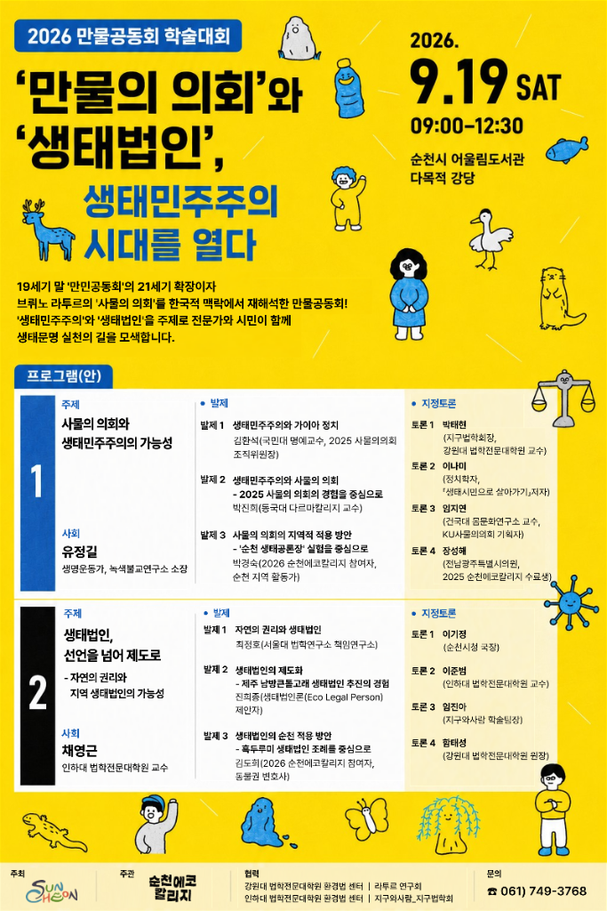

01. 행사개요
사람만 사는 도시가 아니라
사람과 동물, 식물, 자연, 사물까지
모두가 함께 풍요롭게 살아가는 도시를 상상해봅니다.
만물공동회에서는 시민 한 사람 한 사람이 하나의 ‘만물’이 되어 목소리를 내봅니다.
만물의 목소리로 만들어가는 새로운 순천
02. 축제 흐름도
오늘 나는 어떤 존재가
되어볼까?
내가 선택한 존재의 모습으로
자신을 꾸며봅니다.
축제 곳곳을 돌아다니며
만물의 이야기를 만나보세요.
내가 대변하는 만물의 생각을
공동회에 전달합니다.
모두의 의견을 모아
함께 이야기합니다.
오늘 우리가 결정한 것을
시에 함께 전달합니다.
당신도 오늘, 만물의 대변인이 됩니다.
03. 비인간 꾸미기
나무가 되어볼까요?
짱뚱어가 되어볼까요?
흑두루미가 되어볼까요?
혹은 우리가 평소에 관심을 두지 않았던
어떤 존재가 되어볼까요?
꾸미기 존에서 내가 선택한 ‘다른 존재’로 직접 꾸며보세요.
자신이 무엇이 되느냐에 따라 세상을 보는 눈도 달라집니다.
04. 참여 부스 소개
축제 곳곳의 참여 부스에서 우리가 함께 살아가는 다양한 만물의 이야기를 만나보세요.
한국의 야생동식물의 처지에 대해 들어보세요!
바다는 온갖 쓰레기로 몸살을 앓고 있어요!
물건은 다시 쓰라고 있는 거예요!
탄소발자국 없는 여행을 다녀요!
플라스틱 없는 세상을 꿈꿔요!
순천이 터전인 사람들의 이야기를 들어봐요!
청소년, 청년들의 노동에 대해 알고 있나요?
도시에 사는 나무들끼리 하는 회의, 알고 있나요?
안 쓰는 손수건을 손바느질하여 다용도 주머니로 다시 깨웁니다.
모두 함께 잘 사는 농업은 어떻게 하는 걸까요? 직접 배우고 심어봅니다. 다육식물과 수경식물을 심어보세요.
만물의 목소리를 피켓에 담아보세요.
다양한 비인간의 모습을 캐리커처로 그려줍니다.
다른 존재로 꾸며진 자신의 모습을 멋진 추억으로 남겨드립니다.
베스트 포토제닉 상을 드려요!!
보고, 듣고, 만들고, 체험하면서 ‘만물의 입장’에서 세상을 바라보는 시간
05. 만물퀘스트 소개
축제장 곳곳에 만물들이 여러분을 기다리고 있습니다.
누군가는 여러분에게 도움을 요청할지도 모릅니다.
모든 퀘스트를 마치고 나면 당신은 어느새
만물공동회의 중요한 대변인이 되어 있을 거예요.
06. 본회의 소개
“만물이 잘 사는 순천을 어떻게 만들까?”
축제에서 만난 만물들의 이야기가 한자리에 모입니다.
정답을 정해놓고 이야기하지 않습니다.
사람의 목소리뿐 아니라 만물의 목소리까지 함께 들어봅니다.
시민 모두가 오늘의 ‘만물 대변인’입니다.
07. 퍼레이드 소개
본회의에서 모인 만물들의 목소리와 우리의 약속을 들고 함께 거리로 나갑니다.
내가 대변한 만물과 함께 도시를 걸으며 외쳐봅니다.
“사람만 잘 사는 도시가 아니라
만물이 잘 사는 도시를 만들자!”
우리의 이야기를 도시에 전달하는 시간입니다.
08. 일정표
| 구분 | 시간 | 프로그램 | 장소 |
|---|---|---|---|
| 학술대회 | 09:00 | 세션 1) 한국형 ‘만물공동회’는 가능한가 | 순천시립어울림도서관 3층 강당 |
| 10:50 | 세션 2) 생태법인, 순천에서 가능한가 | ||
| 축제 | 12:00 | <상설 코너> 비인간 꾸미기 워크숍, 전시/체험 부스 | 순천시어울림체육센터 |
| 13:00 | <상설 코너> 비인간 꾸미기 워크숍, 전시/체험 부스 | ||
| 14:00 | <특별 무대> 낭독극 미니토크 콘서트, 만물공동회 의제 부스 | ||
| 15:00 | 만물공동회 본회의 | ||
| 16:00 | 만물공동회 본회의 | ||
| 퍼레이드 | 17:00 | 퍼레이드 및 제안서 전달 | 오천그린광장 |
세션 1) 한국형 ‘만물공동회’는 가능한가
순천시립어울림도서관 3층 강당
세션 2) 생태법인, 순천에서 가능한가
순천시립어울림도서관 3층 강당
<상설 코너> 비인간 꾸미기 워크숍, 전시/체험 부스
순천시어울림체육센터
<상설 코너> 비인간 꾸미기 워크숍, 전시/체험 부스
순천시어울림체육센터
<특별 무대> 낭독극 미니토크 콘서트, 만물공동회 의제 부스
순천시어울림체육센터
만물공동회 본회의
순천시어울림체육센터
만물공동회 본회의
순천시어울림체육센터
퍼레이드 및 제안서 전달
오천그린광장
09. 학술대회 소개
만물공동회가 단순한 축제에 그치지 않는 이유. 우리는 질문합니다.
인간만이 정치의 주체일까? 자연에게도 권리가 있을까?
국내외 연구자와 전문가들이 모여 생태공론장과 생태법인, 생태문명도시를 향한 새로운 상상을 만나보세요.
사회 · 유정길 (생명운동가, 녹색불교연구소 소장)
지정토론 · 박태현 · 이나미 · 임지연 · 장성혜
사회 · 채영근 (인하대 법학전문대학원 교수)
지정토론 · 이기정 · 이준범 · 임진아 · 함태성

10. 오시는 길
2026. 9.19.(토)
09:00–12:00 학술대회
12:00–17:00 축제
순천시립어울림도서관 3층 강당
순천시어울림체육센터
오천그린광장(퍼레이드)
누구나 참여할 수 있습니다.
사전 신청 없이 자유롭게 즐겨주세요.
061) 749-3768
순천에코힐리지